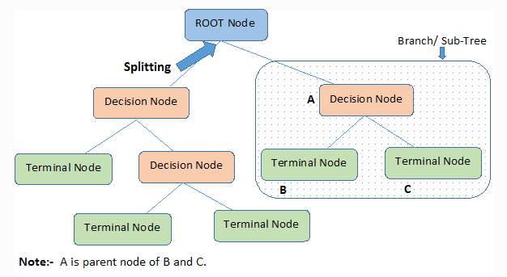

Introduction
Data science is revolutionizing the way we make decisions, from predicting the weather to recommending the next movie to watch. One of its most fascinating tools is predictive modeling—a method used to forecast future outcomes based on past data. This blog will guide you through the fundamentals of predictive modeling, explain how it works, and showcase its real-world applications, making it accessible even for those new to the topic.
What is Predictive Modeling?
Predictive modeling is the process of using data and statistical algorithms to make predictions about future events. Think of it as a crystal ball powered by data: by analyzing historical trends, we can anticipate what’s likely to happen next.
Real-world Analogy
Imagine a weather forecast. Meteorologists analyze historical weather patterns and current conditions to predict tomorrow’s weather. Predictive modeling in data science works similarly but spans many domains, from healthcare to finance.
Why It Matters
Predictive modeling has become a cornerstone in industries such as:
Healthcare
Predicting patient outcomes.
Finance
Assessing credit risk and detecting fraud.
E-commerce
Recommending products based on user preferences.
How Does Predictive Modeling Work?
1. Data Collection
The process begins with gathering relevant data, which could include structured data (e.g., sales figures) or unstructured data (e.g., text or images).
2. Model Building
Data Cleaning and Preparation
Before building a model, data must be cleaned to remove duplicates, fill missing values, and ensure accuracy.
Feature Selection
Key variables, or features, are identified. For instance, house size, number of rooms, and location might be crucial for predicting house prices.
Choosing a Model
Popular models include linear regression, decision trees, and neural networks. Each has strengths depending on the problem.
3. Model Evaluation
Models are tested using metrics like:
- Accuracy: Percentage of correct predictions.
- Precision and Recall: Balancing false positives and negatives.
When evaluating predictive models, it’s important to use appropriate evaluation metrics (such as accuracy, precision, recall, or AUC) that align with the specific problem and ensure that the model is tested on an independent test set to prevent overfitting. Relying solely on training accuracy or a single metric can lead to misleading conclusions, especially in imbalanced datasets where some metrics (like accuracy) might not reflect true model performance.
Common Types of Predictive Models
Linear Regression
A simple model that predicts outcomes based on linear relationships between variables. For example, it might predict house prices based on size alone.
Decision Trees
These models split data into branches based on features, creating an easy-to-interpret “if-then” structure.

Random Forests and Ensembles
By combining multiple decision trees, these models improve accuracy and robustness.

Neural Networks
Inspired by the human brain, neural networks handle complex problems like image recognition or natural language processing.
Real-world Examples of Predictive Modeling
Healthcare
Predictive models help identify patients at risk for certain conditions, enabling earlier interventions.
E-commerce
Retailers use models to recommend products, enhancing customer satisfaction and boosting sales.
Finance
Banks leverage predictive models to detect fraudulent transactions and assess loan risks.
Challenges in Predictive Modeling
Data Quality
Poor-quality data leads to unreliable predictions. Ensuring clean and accurate data is critical.
Bias in Models
Biased data can result in unfair or inaccurate predictions. Awareness and mitigation strategies are essential.
Overfitting vs. Underfitting
- Overfitting: The model is too tailored to training data and performs poorly on new data.
- Underfitting: The model is too simple to capture meaningful patterns.
Figure 5. The green line represents an overfitted model and the black line represents a regularized model. While the green line best follows the training data, it is too dependent on that data and is likely to have a higher error rate on new unseen data, illustrated by black-outlined dots, compared to the black line.
 Figure 6. The blue dashed line represents an underfitted model. A straight line can never fit a parabola. This model is too simple.
Figure 6. The blue dashed line represents an underfitted model. A straight line can never fit a parabola. This model is too simple.
When working with predictive modeling, it’s crucial to balance model complexity and overfitting while ensuring the data is clean, relevant, and representative of the problem at hand.
Interactive Example: Predicting House Prices
Let’s walk through a simplified example: predicting house prices. The dataset is from here.
- Data Cleaning: Removing incomplete entries from a dataset of house attributes.
- Feature Selection: We select the following features:
- SquareFeet: The area of the house (in square feet).
- Bedrooms: The number of bedrooms.
- Bathrooms: The number of bathrooms.
- YearBuilt: The year the house was built.
- Neighborhood: Rural, Suburb, Urban (requires encoding).
- Model Building: Applying a linear regression model.
- Visualization: Plotting actual vs. predicted prices to evaluate performance.
How Can Predictive Modeling Be Applied in the Future?
AI and Automation
Predictive modeling will continue driving advancements in artificial intelligence, enabling smarter automation.
Ethical Considerations
As models grow more powerful, ethical considerations like fairness and transparency will become increasingly important.
Conclusion
Predictive modeling transforms raw data into actionable insights, empowering stakeholders across industries. While tools like Ridge Regression provide valuable predictions, incorporating richer data and advanced techniques will unlock even greater potential. Whether you’re a data enthusiast or a decision-maker, predictive modeling offers a glimpse into the future—one data point at a time.
So why not dive deeper? Experiment with your own data, explore new techniques, and discover the power of predictive modeling for yourself.
References
- Wikipedia contributors. “Overfitting.” Wikipedia, The Free Encyclopedia, https://en.wikipedia.org/w/index.php?title=Overfitting&oldid=1261562364 (accessed January 20, 2025).